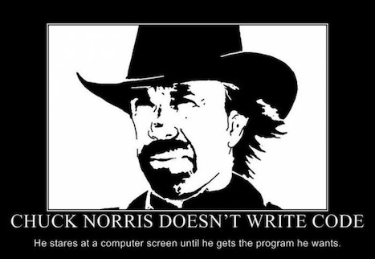

Python Tutoring — Summer 2019

Book

Computer Programming in Context, 2nd edition
by Miller and Ranum
© 2014 by Jones & Bartlett
ISBN 978-1449699390
| Date | Things Talked About in Person | Things to Look At on Your Own |
|---|---|---|
| Tue 7/2 |
Here are the two files we wrote together: look at range.py look at turtle.py Here is a handout showing a bunch of things you can do with the turtle. It also has a complete program. Here is a list of Python colors |
Use the Python turtle to draw an interesting 4th of July picture. You can start by typeing in the program from my turtle handout. Then, you can read about and use some of the other turtle features from the handout. |
| Thu 6/27 |
Here is a link to download Python. And here is link to download Wing 101 (it's free) which makes writing Python programs a bit easier. |
Take a look at Exercises 1.1 — 1.7 on page 13. |